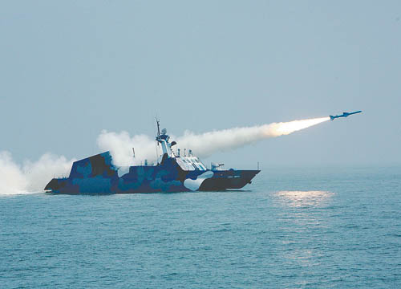
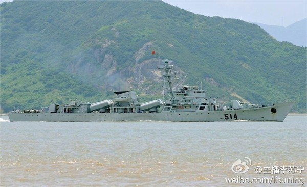
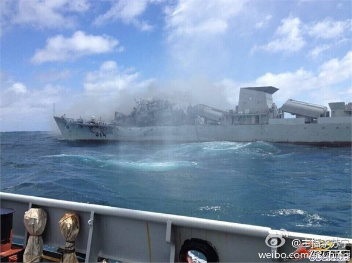
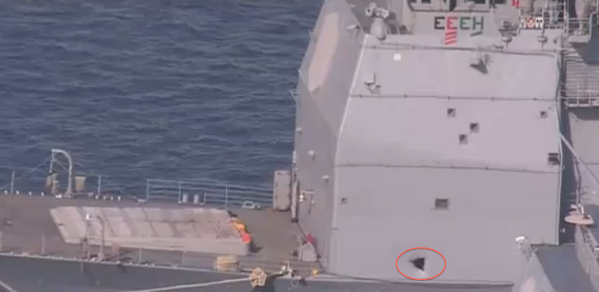

2014-10-19 04:43:00
我在前文《新東風16飛彈》裡曾經提到東風16將取代早期型的東風21，未來東風21可能會專司反艦任務。共軍在冷戦結束後，積極發展各型中短程彈道飛彈，用來執行開戦第一小時的先發打撃任務，但是新型東風21的2500公里射程，對琉球來說太長，打關島則不够，因此它將成為一個特例：亦即共軍彈道飛彈序列中，唯一用在守勢作戦的型號。
共軍之所以開發出世界獨一無二的反艦彈道飛彈，源自1995-6年的台海危機。當時李登輝為了擴展台灣内部的政治包線，鼓動台獨情緒，因而公開向美國推銷“以台制華”。這是美國自韓戦後的既有政策，把它公開化的實質意義，只是對内部宣傳和對中共挑衅。江澤民在外交上是個大老粗，没有細想就發射飛彈以示威脅，輕輕鬆鬆地落入李登輝的圈套。克林頓隨即派了两個航母戦鬥群到台灣東北海域，這時共軍海空能力的短缺，就昭然若揭了。幾十艘美軍戦艦就在距岸不到500公里的菲律賓海，其艦載機可以對大陸沿海及縱深目標輕易進行毁滅性的打撃，但是共軍卻一點還手的辦法也没有：J-7和J-8戦鬥機的性能還不如美國空軍訓練用的靶機；051驅逐艦和053護衛艦根本没有中遠程防空的手段，對抗航母戦鬥群純属自殺；連中共海軍投資甚大的035明級潜艇，在洛杉磯級核動力攻擊潛艇、各式反潜直升機和P3C反潜機夾撃之下，也只能倉皇逃離台灣沿海，但求保命。
1996台海危機因而造成共軍内部根本性的震撼，也成了中共海空軍現代化的動力和標的。讓江澤民最吃驚的，是美國航母戦鬥群可以轟炸内陸1000公里腹地的縱深打撃能力；如果那两個航母戦鬥群不是部署到西菲律賓海，而是北海，那他們將可以輕鬆炸平北京一帶的所有戦略和戦術目標，而中共海空軍還是拿他們没有辦法的。既然江澤民本人也是戦略目標之一，提高共軍對美國海軍航空兵的防御能力，自然就一夕之間成為國家的最緊要任務之一。而如同其他的重大建設項目一様，中共對這個新任務也是按部就班地一步一步前進。
在1996年後的頭十年，共軍積極投資在可以快速達成的權宜應急手段，從本土防御向近岸防御發展為方針。這包括在1996年底就大幅增購SU-27來提升空戦能力，引進S-300陸基防空飛彈系統來保護首都地區，引進Sovremenny級驅逐艦為艦隊提供中程區域防空保護能力，引進很安静的Kilo級潜艇以威脅靠岸太近的航母戦鬥群，開發22型飛彈快艇以狼群戦術對近岸目標做自殺攻撃，開發051C驅逐艦（基本上是裝了S-300的051級）以保護渤海空域，開發H-6改進型以及JH-7作為反艦巡航飛彈的空射平台。

22型飛彈快艇發射YJ-83反艦飛彈。22型的雙體設計來自澳洲的民用船，速度高達50節，載有八枚飛彈，是飛彈快艇中的佼佼者。但是任何飛彈快艇都有两個致命缺點：首先是防空能力薄弱，没有空優的情況下只能靠數量做自殺式攻撃；其次是航程太短，即使有空優掩護也只能在近岸巡邏。22型在2004年開始部署的時候，共軍已經即將進入近海防御的階段，因此它的實用性只維持了短短幾年，現在早已是明顯的雞肋。不過弱國海軍没有更好的選擇，裝備飛彈快艇是聊勝於無的無奈之舉，所以我不反對國軍換裝新的飛彈艇，只是不應該花大銭在這種過時的武器項目。
從大約2005年起，中共海空軍的現代化開始跨向下一階段，也就是近海防御；若干新的反撃能力，使海上防線從離岸500公里逐步外推到2000公里左右，2000公里剛好是美國海軍航空兵的最大作戦半徑。這些新能力包括引進比JH-7先進一代的Su-30戦鬥轟炸機，發展出可以大量自製的J-10和J-11戦鬥機，開發YJ-100超遠程反艦巡航飛彈（詳見前文《中共的新一代反艦飛彈》），開發出052C和052D級遠程區域防空高速驅逐艦，部署僚寜號航空母艦，開發具有絕氣推進系統（AIP）的039B級潜艇，開發性能接近洛杉磯級的093和093G核動力攻擊潛艇。但是對離岸2000公里的航母戦鬥群的最重要嚇阻力量，還是首推東風21D型反艦彈道飛彈，這是因為中程彈道飛彈的終端速度可以高達10馬赫，近防系統完全無用，而艦載反導系統又貴又不可靠。
在2010年，美軍的太平洋戦區（PACOM）司令官Willard上將公開宣稱東風21D在多次試射成功之後，已經獲得了IOC（Initial Operating Capability，初始運作能力；這是美軍的詞彙，意思是該項武器或許還在研究改進當中，但是必要時已經可以執行作戦任務）。2013年年底，僚寜號在南海做了37天的訓練和測試，有傳言說東風21D也配合做了又一次試射，但是仍然没有圖片。一直到一個禮拜前，大陸的一名電視新聞主播李蘇寧發布了一批照片，上面是已退役的053H級護衛艦514號充當靶艦的前後景像，這才讓少數人（我也是其中之一）認为我們終於看到了東風21D試射的威力。 
514號護衛艦服役期間的照片。

514號承受了一枚改裝了惰性彈頭的反艦飛彈之後。請注意艦橋已經完全倒塌，側面的艦身也受力而明顯彎曲外突。飛彈很明顯地是由上至下撃中514號，而反艦巡航飛彈一般是從側面撃中目標的。此外要造成如此大破壞所需的動能，遠在反艦巡航飛彈的幾十倍之上，只有彈道飛彈才有可能，而世界上只有一型反艦彈道飛彈。

2013年十一月，一架BQM-74靶機在美軍巡洋艦USS Chancellorsville (CG-62)測試雷達的過程中，誤撃了其艦橋。BQM-74相當於小型反艦飛彈，只有250公斤重，但是即使是大型反艦巡航飛彈改裝惰性彈頭之後，留下的也只是一個洞。這是因為動能與質量成正比，而與速度的平方成正比。反艦巡航飛彈的終端速度在0.7至2.5馬赫之間，遠不及反艦彈道飛彈。
自2015年起，中共海空軍的發展將逐步邁向另一個新境界，也就是完全掌控離岸2000公里内的空優和海權後的遠洋防御。目前我們知道的新作戦系統有055級巡洋艦（或稱驅逐艦），054B級全電動力反潜護衛艦，001A和002級航空母艦，性能超越洛杉磯級的095級潜艇，KJ-500型預警機，但是最重要的還是J-20隱身戦鬥機，因為現代戦争的第一要素是空優。有興趣的讀者可以參考前文《共軍小道消息總匯》。